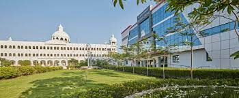

Myself Kaviyadharshini.I am pursuing at the Sathyabama University BE CSE Artificial intelligence and machine learing , and my graduation is about to complete in the next couple of years .
I am self motivated and disciplined soul . I am always
keen to up skill myself by learning new things whenever I get a chance. I believe in being realistic.
The university is in Sholinganallur about 15 km from Adyar in Chennai. It has a campus of 400 acres. The university is located on Rajiv Gandhi Salai (formerly known as Old Mahabalipuram Road and popularly known as IT Corridor).Sathyabama Institute
of Science and Technology has been accredited by the National Assessment and Accreditation Council (NAAC) with 'A' Grade.[4] SATHYABAMA has received ISO 9001:2008 certification.
The University is accredited by the governing body, National Buildings
Organisation (NBO), Computer science engineering department latestly got the privilege of being accredited by NBO.
Tiruvannamalai (Tamil: Tiruvaṇṇāmalai IPA: [ˈtiɾɯʋaɳːaːmalɛi̯], otherwise spelt Thiruvannamalai; Trinomali or Trinomalee[2] on British records) is a city, a spiritual, cultural, economic hub and also the administrative headquarters of Tiruvannamalai District in the Indian state of Tamil Nadu. The city is home to the renowned Annamalaiyar temple, Annamalai hill, Girivalam and the Karthigai deepam festival. Being a prominent tourist destination which attracts considerable foreign visitors.[3] The city is one of the cities featured in lonely planet.[4] the city has a thriving service sector industry including retail, resorts and recreation activities. Apart from the service sector, the city is also the hub for many industrial setups including SIDCO,[5][6] spinning mills and premier educational institutions.[7][8] The city is administered by the Tiruvanamalai Municipality, originally constituted in the year 1886.[9] The city has a good network of roadways and railways and a popular getaway to the Megacities of Chennai and Bengaluru. The Union Ministry of Civil Aviation is considering setting up a new airport at Tiruvannamalai.[10]
